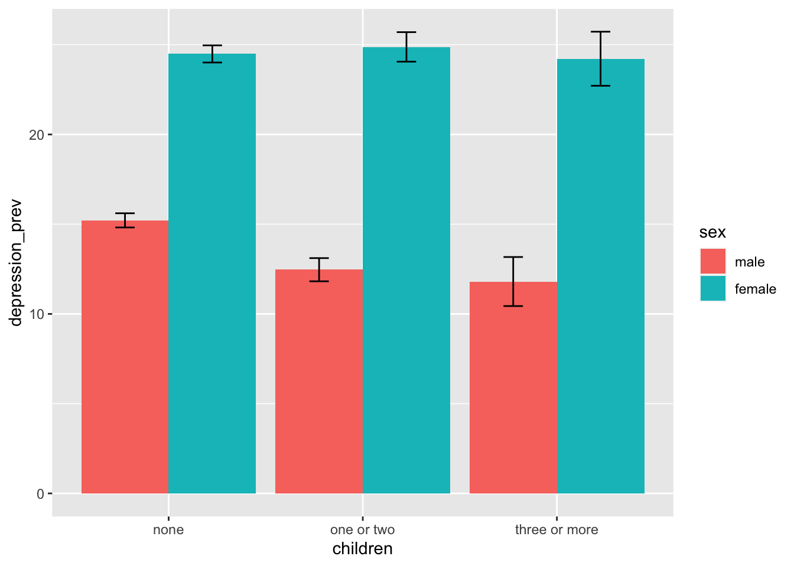
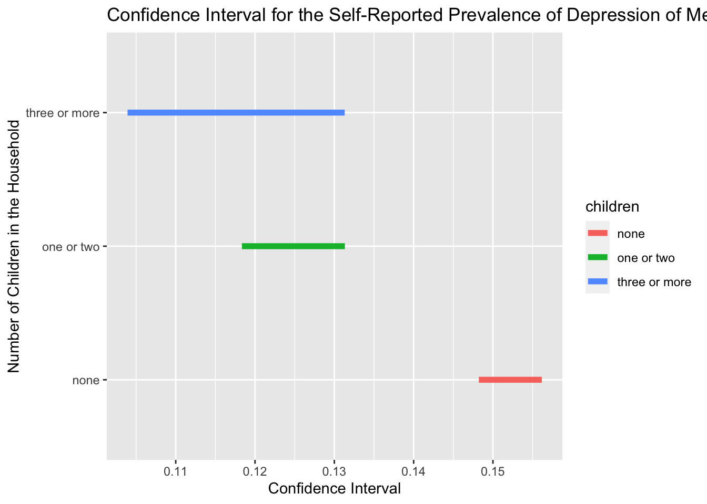
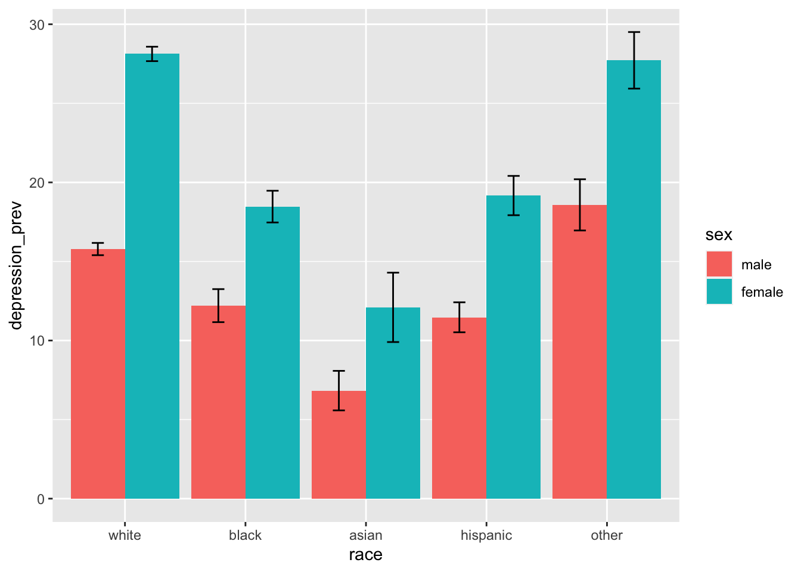
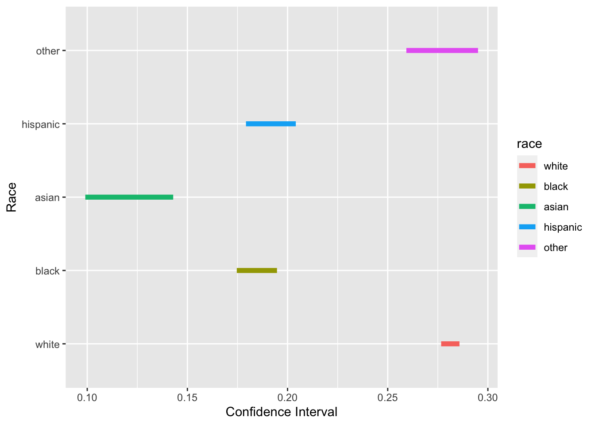

Below is the unweighted counts of the all included demographic variables, exposure, and other covariates, dichotomized by whether they self-reported whether they’ve ever been told by a physician that they had depression.
tb1_unweighted_depr =
brfss_design$variables %>%
tbl_summary(by = depression, percent = "row",
include = c(sex, race, age, marital_status,
children,
education, income, employment,
general_health, exercise),
type = list(exercise ~ "categorical"))
tb1_unweighted_depr| Characteristic | no, N = 335,7781 | yes, N = 81,8411 |
|---|---|---|
| sex | ||
| male | 167,081 (86%) | 27,206 (14%) |
| female | 168,697 (76%) | 54,635 (24%) |
| race | ||
| white | 249,244 (79%) | 64,432 (21%) |
| black | 26,056 (85%) | 4,701 (15%) |
| asian | 9,536 (91%) | 934 (8.9%) |
| hispanic | 27,207 (83%) | 5,770 (17%) |
| other | 16,166 (78%) | 4,567 (22%) |
| Unknown | 7,569 | 1,437 |
| age | ||
| 18-29 | 33,499 (74%) | 11,548 (26%) |
| 30-49 | 82,803 (77%) | 24,618 (23%) |
| 50-64 | 88,112 (79%) | 23,354 (21%) |
| 65+ | 124,611 (85%) | 21,558 (15%) |
| Unknown | 6,753 | 763 |
| marital_status | ||
| married | 185,410 (85%) | 33,893 (15%) |
| not married | 147,629 (76%) | 47,445 (24%) |
| Unknown | 2,739 | 503 |
| children | ||
| none | 244,057 (81%) | 58,446 (19%) |
| one or two | 64,429 (79%) | 17,188 (21%) |
| three or more | 19,675 (80%) | 4,968 (20%) |
| Unknown | 7,617 | 1,239 |
| education | ||
| less than high school | 18,312 (77%) | 5,469 (23%) |
| high school or some college | 174,458 (79%) | 46,113 (21%) |
| bachelors or higher | 141,888 (82%) | 30,124 (18%) |
| Unknown | 1,120 | 135 |
| income | ||
| <=35000 | 68,743 (72%) | 27,082 (28%) |
| 35000-75000 | 83,987 (80%) | 20,355 (20%) |
| >75000 | 94,886 (84%) | 18,158 (16%) |
| Unknown | 88,162 | 16,246 |
| employment | ||
| employed | 177,353 (82%) | 37,622 (18%) |
| homemaker/student/retired | 127,074 (83%) | 25,158 (17%) |
| unemployed | 25,694 (59%) | 18,099 (41%) |
| Unknown | 5,657 | 962 |
| general_health | ||
| excellent | 67,352 (91%) | 7,047 (9.5%) |
| very good/good | 224,391 (82%) | 50,388 (18%) |
| fair/poor | 43,365 (64%) | 24,223 (36%) |
| Unknown | 670 | 183 |
| exercise | ||
| yes | 260,474 (82%) | 56,254 (18%) |
| no | 74,763 (75%) | 25,443 (25%) |
| Unknown | 541 | 144 |
| 1 n (%) | ||
We make the following observations about the above summary counts:
Below is the weighted summary counts:
tb1_weighted_depr =
brfss_design %>%
tbl_svysummary(by = depression, percent = "row",
include = c(sex, race, age, marital_status,
children,
education, income, employment,
general_health, exercise),
type = list(exercise ~ "categorical"))
tb1_weighted_depr| Characteristic | no, N = 189,008,4621 | yes, N = 45,634,9841 |
|---|---|---|
| sex | ||
| male | 98,235,009 (86%) | 16,210,025 (14%) |
| female | 90,773,453 (76%) | 29,424,959 (24%) |
| race | ||
| white | 111,897,195 (78%) | 31,791,683 (22%) |
| black | 22,996,644 (84%) | 4,248,103 (16%) |
| asian | 12,446,815 (91%) | 1,305,909 (9.5%) |
| hispanic | 32,122,510 (85%) | 5,818,498 (15%) |
| other | 5,613,740 (77%) | 1,688,145 (23%) |
| Unknown | 3,931,558 | 782,646 |
| age | ||
| 18-29 | 34,822,729 (76%) | 11,229,895 (24%) |
| 30-49 | 61,075,905 (80%) | 15,552,855 (20%) |
| 50-64 | 46,126,287 (81%) | 11,162,477 (19%) |
| 65+ | 43,483,955 (86%) | 7,328,943 (14%) |
| Unknown | 3,499,586 | 360,814 |
| marital_status | ||
| married | 100,449,880 (85%) | 18,135,368 (15%) |
| not married | 86,848,937 (76%) | 27,211,383 (24%) |
| Unknown | 1,709,645 | 288,232 |
| children | ||
| none | 120,736,333 (80%) | 29,905,890 (20%) |
| one or two | 48,127,081 (81%) | 11,451,045 (19%) |
| three or more | 15,135,925 (81%) | 3,515,248 (19%) |
| Unknown | 5,009,124 | 762,802 |
| education | ||
| less than high school | 21,573,377 (79%) | 5,635,553 (21%) |
| high school or some college | 107,157,297 (79%) | 28,381,776 (21%) |
| bachelors or higher | 59,589,627 (84%) | 11,551,900 (16%) |
| Unknown | 688,162 | 65,755 |
| income | ||
| <=35000 | 41,014,077 (74%) | 14,729,428 (26%) |
| 35000-75000 | 43,050,459 (80%) | 10,609,971 (20%) |
| >75000 | 52,475,298 (84%) | 10,295,634 (16%) |
| Unknown | 52,468,628 | 9,999,951 |
| employment | ||
| employed | 110,844,849 (83%) | 22,403,620 (17%) |
| homemaker/student/retired | 56,063,484 (82%) | 11,971,892 (18%) |
| unemployed | 18,304,169 (63%) | 10,657,095 (37%) |
| Unknown | 3,795,960 | 602,377 |
| general_health | ||
| excellent | 41,082,004 (91%) | 4,240,559 (9.4%) |
| very good/good | 123,736,270 (82%) | 28,002,640 (18%) |
| fair/poor | 23,837,439 (64%) | 13,302,467 (36%) |
| Unknown | 352,748 | 89,318 |
| exercise | ||
| yes | 147,138,714 (82%) | 32,179,259 (18%) |
| no | 41,649,916 (76%) | 13,364,835 (24%) |
| Unknown | 219,832 | 90,890 |
| 1 n (%) | ||
We can see that the same observations above hold in the weighted summary counts.
We take closer looks at how gender might interact with the following demographic variables to affect self-reported depression:
We are interested in the differential impact of the number of children in the household on self-reported depression among men and women. Below is a barplot on this topic:
brfss_design %>%
group_by(sex, children, depression) %>%
summarize(depression_prev = 100*survey_mean(na.rm = T, vartype = c("ci"))) %>%
filter(!is.na(children), depression == "yes") %>%
select(-depression) %>%
ggplot(aes(x = children, y = depression_prev, fill = sex)) +
geom_bar(position="dodge", stat="identity") +
geom_errorbar(aes(ymin=depression_prev_low, ymax=depression_prev_upp),
width=.2, position=position_dodge(.9))
One interesting observation is that men who have children in the household have noticeably lower prevalence of self-reported depression while women who have children don’t. We do a chi-square test incorporating the survey weights to verify this observation, below are the p-values of the test results for women and men:
# For women
brfss_design %>%
filter(sex == "female") %>%
select(children, depression) %>%
svychisq(~children + depression, . , statistic="adjWald") %>%
broom::tidy() %>%
pull(p.value)## [1] 0.6627671# For men
brfss_design %>%
filter(sex == "male") %>%
select(children, depression) %>%
svychisq(~children + depression, . , statistic="adjWald") %>%
broom::tidy() %>%
pull(p.value)## [1] 1.603831e-14As expected, based on the chi-squared test, self-reported depression is significantly associated with the number of children in the household among men but not women.
Also, we draw the confidence interval for the self-reported prevalence of depression among men with different numbers of children in the household.
brfss_design %>%
group_by(sex, children, depression) %>%
summarize(depression_prev = survey_mean(na.rm = T, vartype = c("ci"))) %>%
filter(!is.na(children), sex == "male", depression == "yes") %>%
ggplot() +
geom_segment(aes(x = depression_prev_low, xend = depression_prev_upp,
y = children, yend = children, color = children),
size = 2) +
labs(
title = "Confidence Interval for the Self-Reported Prevalence of Depression of Men",
x = "Confidence Interval",
y = "Number of Children in the Household"
) 
As can be seen from the plot, the CI of the group with none children doesn’t have overlapping part with and is entirely higher than the CI of other two groups, indicating the self-reported prevalence of depression is significantly higher among men with no child in household compared with those with children.
Next, we examine how gender and race together associate with self-reported depression.
brfss_design %>%
group_by(sex, race, depression) %>%
summarize(depression_prev = 100*survey_mean(na.rm = T, vartype = c("ci"))) %>%
filter(!is.na(race), depression == "yes") %>%
select(-depression) %>%
ggplot(aes(x = race, y = depression_prev, fill = sex)) +
geom_bar(position="dodge", stat="identity") +
geom_errorbar(aes(ymin=depression_prev_low, ymax=depression_prev_upp),
width=.2, position=position_dodge(.9))
We can see that not only is the prevalence of self-reported depression higher in women than men, the same seems to hold true for all race/ethnicities included in the data set. Below are the p-values of the chi-squared test we did seperately for women and men to verify this observation:
# For women
brfss_design %>%
filter(sex == "female") %>%
select(race, depression) %>%
svychisq(~race + depression, . , statistic="adjWald") %>%
broom::tidy()%>%
pull(p.value)## [1] 9.256875e-115# For men
brfss_design %>%
filter(sex == "male") %>%
select(race, depression) %>%
svychisq(~race + depression, . , statistic="adjWald") %>%
broom::tidy()%>%
pull(p.value)## [1] 2.696494e-52The p-values of the tests are extremely small, indicating that as least one race in each gender group has self-reported depression prevalence significantly different from other groups.
brfss_design %>%
group_by(sex, age, depression) %>%
summarize(depression_prev = 100*survey_mean(na.rm = T, vartype = c("ci"))) %>%
filter(!is.na(age), depression == "yes") %>%
select(-depression) %>%
ggplot(aes(x = age, y = depression_prev, fill = sex)) +
geom_bar(position="dodge", stat="identity") +
geom_errorbar(aes(ymin=depression_prev_low, ymax=depression_prev_upp),
width=.2, position=position_dodge(.9))
Below are the p-values of the chi-squared tests for the self-reported prevalence of depression in different age groups, for women and men seperately.
# For women
brfss_design %>%
filter(sex == "female") %>%
select(age, depression) %>%
svychisq(~age + depression, . , statistic="adjWald") %>%
broom::tidy()%>%
pull(p.value)## [1] 5.482468e-119# For men
brfss_design %>%
filter(sex == "male") %>%
select(age, depression) %>%
svychisq(~age + depression, . , statistic="adjWald") %>%
broom::tidy()%>%
pull(p.value)## [1] 4.145113e-48Based on the plot and test result above, it seems that, for women, the prevalence of self-reported depression remains stable between age group 30-49 and 50-64, but decreases significantly when entering the age group of 30-49 as well as the group of 65+. The same trend is also displayed in men but with smaller magnitude in changes.
This gap in the magnitude of changes in the prevalence of self-reported depression indicates that aging might affect self-reported depression among women and men differently.